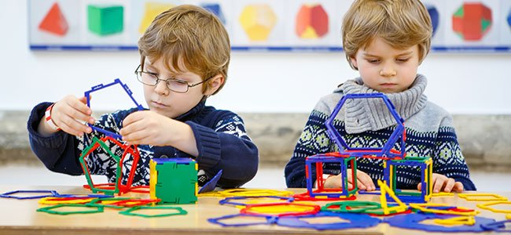
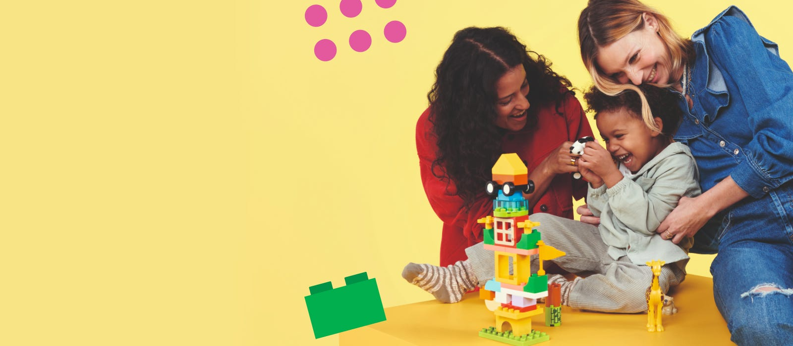
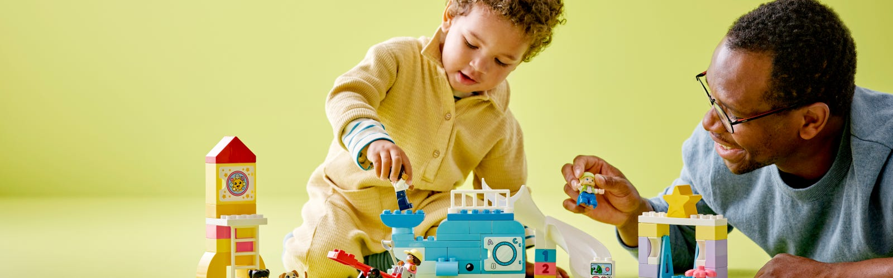

FORMACIÓN DOCENTE
Aprender Jugando
Aprender a través del juego permite a los niños desarrollar habilidades cognitivas, sociales y emocionales de manera natural y divertida. El juego estimula la creatividad y la imaginación, claves para el desarrollo del pensamiento crítico. Jugando, los niños exploran el mundo que los rodea y construyen nuevos conocimientos. Además, las experiencias lúdicas fomentan la autonomía y fortalecen la toma de decisiones. El juego compartido también enseña valores fundamentales como el respeto, la empatía y el trabajo en equipo.

Niños explorando su creatividad con bloques de construcción.

La interacción entre niños y adultos fortalece los vínculos y el aprendizaje.